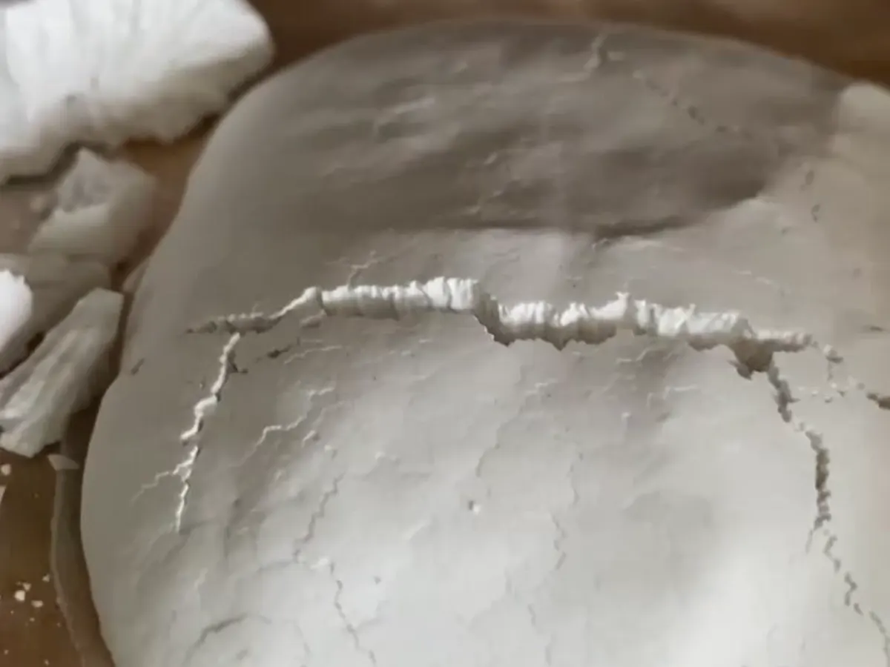

Bột sắn dây thật đắt hơn bột năng, bột mì nhiều lần, nên trên thị trường có không ít loại bị pha thêm. Không có cách thử nào ở nhà chắc chắn 100%, nhưng gộp 5 dấu hiệu dưới đây lại thì bạn sẽ đoán khá đúng.
1. Nhìn hình dạng
Bột sắn dây lọc và sấy theo cách truyền thống thường ở dạng tảng, vảy, hạt to nhỏ không đều, sờ thấy hơi ráp. Bột mịn đều như bột mì, không còn vảy nào, là dấu hiệu nên hỏi kỹ người bán (có thể đã nghiền nhỏ, cũng có thể đã pha bột khác).
2. Nhìn màu
Màu tự nhiên là trắng ngà, trắng hơi ánh xanh, không trắng tinh như vôi. Bột trắng xoá, sáng loá bất thường có thể đã qua tẩy trắng.
3. Bóp và nghe
Bốc một nắm bóp mạnh trong tay: bột sắn dây thật thường kêu "kin kít", "sột sột" và rời ra khi buông tay. Bột năng, bột mì bóp thấy mịn, bám tay, ít tiếng.
4. Ngửi
Mùi thơm nhẹ, mát, rất khó tả. Nếu có mùi chua, mùi hôi mốc hay mùi hoá chất thì không nên dùng.
5. Thử với nước
- Nước lạnh: cho 1 thìa bột vào cốc nước lạnh, khuấy rồi để yên. Bột sắn dây lắng xuống đáy khá nhanh, nước phía trên trong lại.
- Nước sôi: hoà bột với chút nước lạnh, rồi rót nước sôi vào và khuấy. Bột sắn dây chuyển từ đục sang trong, hơi sánh, có mùi thơm nhẹ.
Đây là các mẹo kinh nghiệm, không thay được kiểm nghiệm trong phòng thí nghiệm. Cách chắc chắn nhất vẫn là mua của người biết rõ nguồn gốc: thấy được nương trồng, nơi lọc và sấy bột.
Bột của nhà mình làm thế nào
Củ sắn dây đào từ nương dưới chân núi đá ở xã Vũ Lăng (Bắc Sơn, Lạng Sơn), rửa sạch, nghiền, rồi lọc và lắng nhiều lượt bằng tay đến khi bột trắng trong. Bột ướt được sấy trong lò sấy nhiều tầng, không phơi bụi, không tẩy trắng, không pha thêm gì. Bạn có thể xem ảnh và video từng bước ở trang sản phẩm.